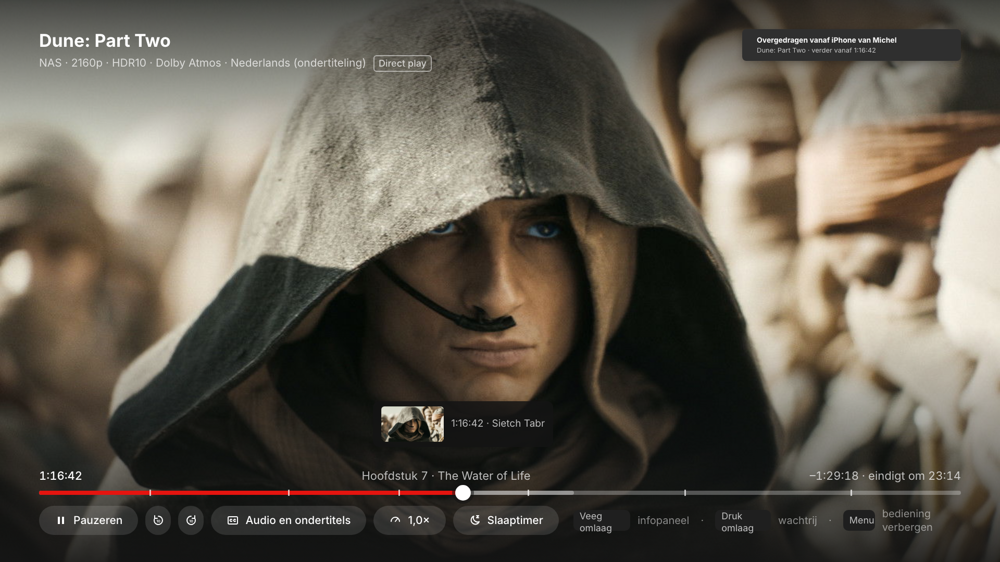
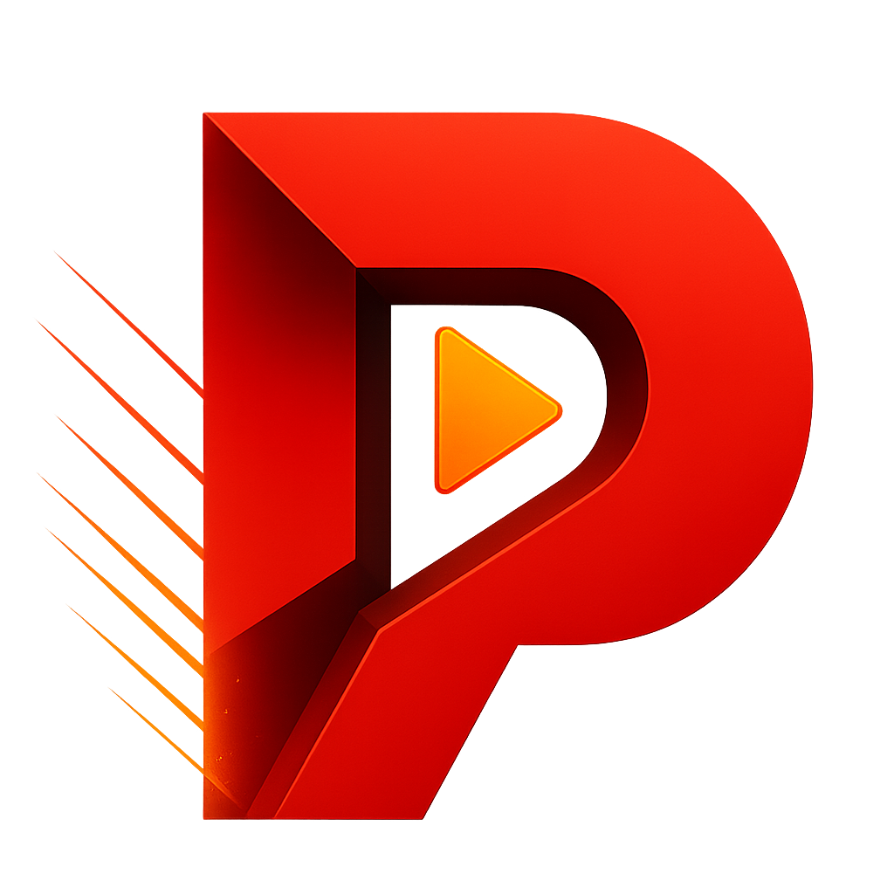

2024 · Avontuur · 2 u 46 min
Dune: Part Two
1:16:42 · The Water of Life
0:00
1:16:42
−1:29:18
Info
Hoofdstukken
Wachtrij
Big P
Meer
Eindigt om 23:14
×
Meer
Dune: Part Two
Concept · actie gedemonstreerd
TVOS-ONTWERP · BEKIJKSTATEN
Hoofdbeeld
Focus
Audio
Meer
Terug